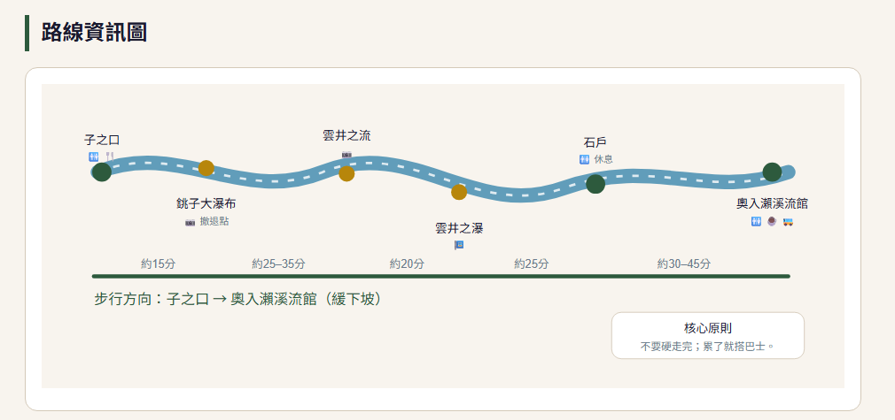

Day 3｜7/23（四）奧入瀨溪流 JR BUS 慢旅行
青森站 → 子之口下車 → 沿溪流緩下坡步行 → 奧入瀨溪流館搭 JR BUS 返回青森。這版把你喜歡的「路線資訊圖」直接加入頁面，並把當天行程改成手機好讀的時間軸。
核心原則：不要硬走完；累了就在子之口、銚子大瀑布、雲井之瀑、石戶或溪流館等站搭回程巴士。
🚌 官方最新時刻表
📍 奧入瀨溪流館地圖
路線資訊圖

今天只需要看這一頁
07:40
青森站早餐時間
建議在青森站或飯店用早餐，準備飲水與輕食。
08:10
搭乘 JR BUS「湖2號」
青森站出發，前往奧入瀨、十和田湖方向。
10:40
子之口下車
整裝、上洗手間、補水，開始下坡方向散步。
10:55
銚子大瀑布
第一站美景，拍照後繼續沿溪流下行。
11:30
雲井之流／雲井之瀑
溪流與瀑布精華區，請注意腳下濕滑。
12:30
石戶休息（重要撤退點）
長輩若累，建議直接在石戶等回程巴士；體力夠再前往溪流館。
13:30
奧入瀨溪流館抵達
休息、咖啡、冰品、伴手禮、洗手間，等待回程巴士。
14:27
搭 JR BUS 返回青森站
推薦回程班次，約 16:29 抵達青森站。保險備案：15:42 → 17:44。
16:29
抵達青森站
結束奧入瀨溪流慢旅行，晚上回飯店泡湯休息。